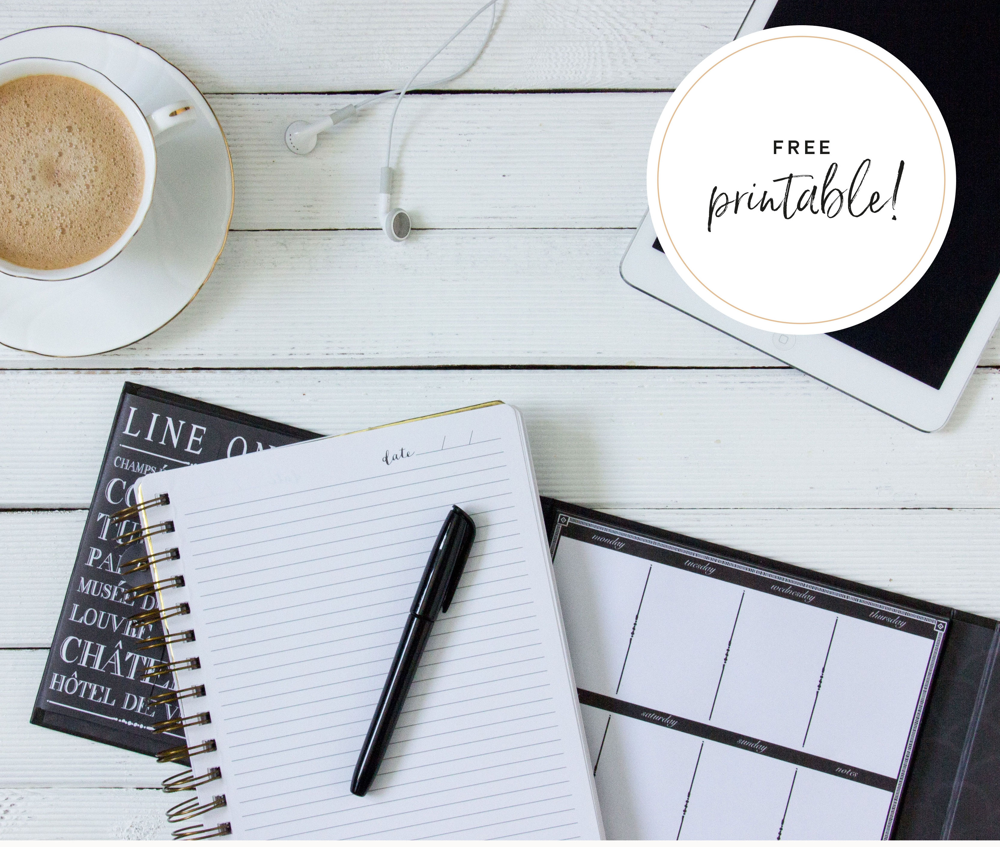
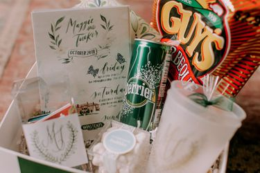

Top 21 Reception Venues in Australia
It can be a challenge to find the perfect wedding venue. Australia is one of the most beautiful countries in the world with a great deal of beautiful locations. If you are looking to get married in Australia, here you can find the most amazing wedding venues. ABIA have rated their favourite wedding venues.

How to find the perfect wedding planner
Even though you might be a very organised person, it could be worth investing in a wedding planner. Click on the link to find out some tips about what to think of when hiring a wedding planner.

Planning your own wedding
If you prefer to plan your on your own, here's a guide and top tips for planning your own wedding.